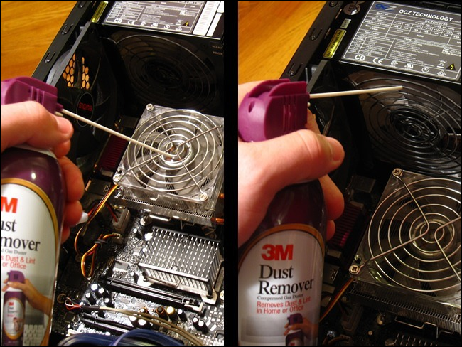
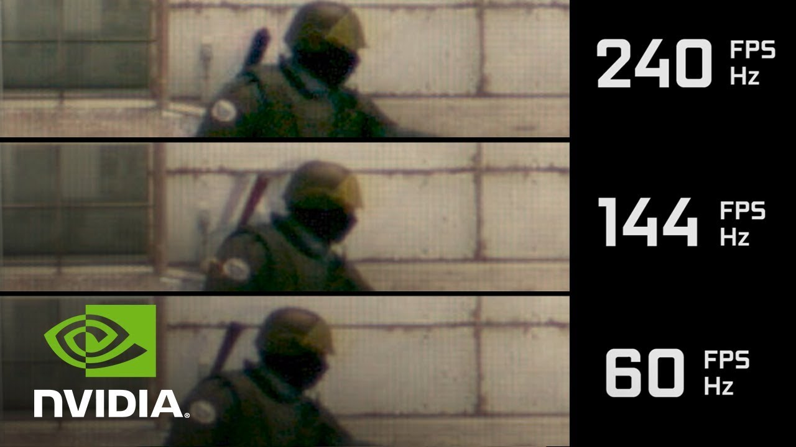
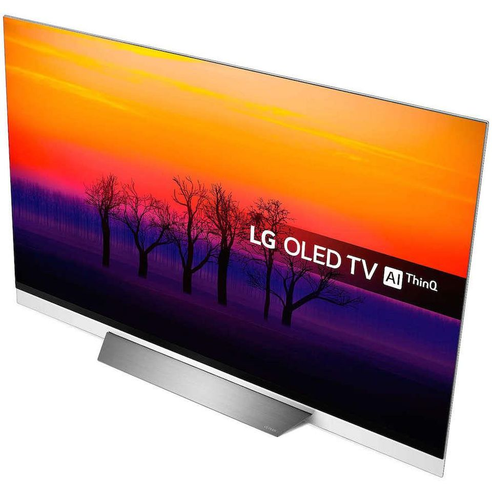
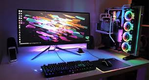

Bibliography
Welcome to
🅹🅰🅺🅴🆂
🆃🅴🅲🅷
🆃🅸🅿🆂
Information
PC Gamer
NZXT
PC Gamer
PC Gamer
Tech Radar
Tech Radar
NZXT
Images
1

2

3

4

5

6

7

8
9

10

11

12

13
14

15

16

17

18

19

20

21
22

23

24
25
26
27

28

29

*Only visit these sites at your own risk, some may have viruses! Have an antivirus on your computer*